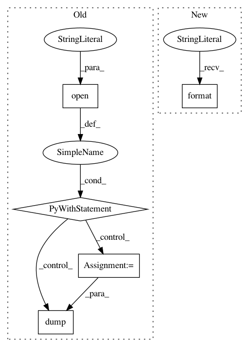

f799eeaec115d17693f99c6e02d3bb0eac3feaa9,src/search_suspect_places.py,,write_suspicious_info,#Any#Any#,164
Before Change
def write_suspicious_info(suspect_around, cnpj):
cnpj = re.sub(CNPJ_REGEX, "", cnpj)
print("Writing %s" % cnpj)
with open("%s/%s.pkl" % (TEMP_PATH, cnpj), "wb") as f:
pickle.dump(suspect_around, f, pickle.HIGHEST_PROTOCOL)
def read_suspicious_info(company):
cnpj = re.sub(CNPJ_REGEX, "", company["cnpj"])
filename = "%s/%s.pkl" % (TEMP_PATH, cnpj)
if os.path.isfile(filename):
After Change
def write_suspicious_info(suspect_around, cnpj):
cnpj = "".join(re.findall(r"[\d]", cnpj))
print("Writing {}".format(cnpj))
write_csv(suspect_around.update({"cnpj": cnpj}))
In pattern: SUPERPATTERN
Frequency: 4
Non-data size: 5
Instances
Project Name: okfn-brasil/serenata-de-amor
Commit Name: f799eeaec115d17693f99c6e02d3bb0eac3feaa9
Time: 2016-11-09
Author: schwendler@gmail.com
File Name: src/search_suspect_places.py
Class Name:
Method Name: write_suspicious_info
Project Name: HazyResearch/fonduer
Commit Name: c12f538d2d496f5e8f932abc1ee72a586b9ea855
Time: 2018-08-14
Author: senwu@cs.stanford.edu
File Name: fonduer/learning/disc_learning.py
Class Name: TFNoiseAwareModel
Method Name: save
Project Name: snorkel-team/snorkel
Commit Name: b56a4b355dfc302fa449d223e065af3a7acac986
Time: 2018-05-03
Author: dnicholson329@gmail.com
File Name: snorkel/learning/pytorch/noise_aware_model.py
Class Name: TorchNoiseAwareModel
Method Name: save
Project Name: daavoo/pyntcloud
Commit Name: cdbe12c9ecc86fb54e6310d6aeab98edc6eba879
Time: 2017-05-02
Author: daviddelaiglesiacastro@gmail.com
File Name: pyntcloud/plot/points.py
Class Name:
Method Name: plot_PyntCloud